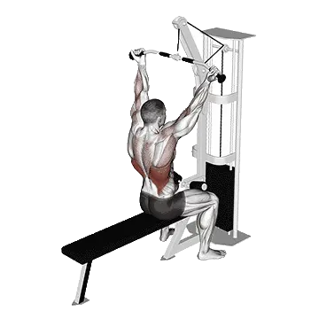

Reverse-Grip Lat Pulldown
Reverse-Grip Lat Pulldown shows average weight and strength standards as a reference for back. Primary muscles: Latissimus dorsi, Biceps brachii.

Average weight: Intermediate
Reference for an intermediate lifter.
Men
198 lb
Women
85 lb
Reverse-Grip Lat Pulldown: Average weight [1RM]
| Level | ||
|---|---|---|
| Beginner | 92 lb | 19 lb |
| Novice | 138 lb | 45 lb |
| Intermediate | 198 lb | 85 lb |
| Advanced | 267 lb | 136 lb |
| Elite | 344 lb | 197 lb |
Note: These standards are 1RM estimates based on average lifters. Bodyweight, age, and other personal factors can affect the values. See the detailed tables below.
Reverse-Grip Lat Pulldown: Strength standards (lb)
Men by bodyweight (lb) [1RM]
| Bodyweight | Beginner | Novice | Intermediate | Advanced | Elite |
|---|---|---|---|---|---|
| 110 | 53 | 86 | 129 | 181 | 239 |
| 120 | 61 | 96 | 141 | 196 | 256 |
| 130 | 68 | 106 | 153 | 210 | 272 |
| 140 | 76 | 115 | 165 | 223 | 287 |
| 150 | 84 | 124 | 176 | 236 | 302 |
| 160 | 91 | 133 | 186 | 248 | 316 |
| 170 | 98 | 142 | 197 | 260 | 329 |
| 180 | 105 | 151 | 207 | 272 | 342 |
| 190 | 112 | 159 | 216 | 283 | 354 |
| 200 | 119 | 167 | 226 | 293 | 366 |
| 210 | 126 | 175 | 235 | 304 | 378 |
| 220 | 132 | 182 | 243 | 314 | 389 |
| 230 | 138 | 190 | 252 | 323 | 400 |
| 240 | 145 | 197 | 260 | 333 | 410 |
| 250 | 151 | 204 | 269 | 342 | 420 |
| 260 | 157 | 211 | 276 | 351 | 430 |
| 270 | 162 | 218 | 284 | 360 | 440 |
| 280 | 168 | 224 | 292 | 368 | 449 |
| 290 | 174 | 231 | 299 | 376 | 458 |
| 300 | 179 | 237 | 306 | 384 | 467 |
| 310 | 185 | 243 | 313 | 392 | 476 |
Men by age [1RM]
| Age | Beginner | Novice | Intermediate | Advanced | Elite |
|---|---|---|---|---|---|
| 15 | 78 | 118 | 168 | 228 | 293 |
| 20 | 89 | 135 | 193 | 260 | 335 |
| 25 | 92 | 138 | 198 | 267 | 344 |
| 30 | 92 | 138 | 198 | 267 | 344 |
| 35 | 92 | 138 | 198 | 267 | 344 |
| 40 | 92 | 138 | 198 | 267 | 344 |
| 45 | 87 | 131 | 187 | 254 | 326 |
| 50 | 82 | 123 | 176 | 238 | 306 |
| 55 | 76 | 114 | 163 | 220 | 283 |
| 60 | 69 | 104 | 149 | 201 | 258 |
| 65 | 62 | 94 | 134 | 181 | 233 |
| 70 | 56 | 84 | 120 | 163 | 209 |
| 75 | 50 | 75 | 108 | 146 | 187 |
| 80 | 45 | 67 | 96 | 130 | 167 |
| 85 | 40 | 60 | 86 | 117 | 150 |
| 90 | 36 | 55 | 78 | 105 | 135 |
Women by bodyweight (lb) [1RM]
| Bodyweight | Beginner | Novice | Intermediate | Advanced | Elite |
|---|---|---|---|---|---|
| 90 | 11 | 33 | 67 | 112 | 167 |
| 100 | 13 | 35 | 70 | 117 | 173 |
| 110 | 15 | 38 | 74 | 122 | 179 |
| 120 | 16 | 41 | 78 | 127 | 184 |
| 130 | 18 | 43 | 81 | 131 | 189 |
| 140 | 19 | 45 | 84 | 135 | 194 |
| 150 | 21 | 47 | 87 | 138 | 198 |
| 160 | 22 | 49 | 89 | 142 | 203 |
| 170 | 23 | 51 | 92 | 145 | 206 |
| 180 | 25 | 53 | 95 | 148 | 210 |
| 190 | 26 | 55 | 97 | 151 | 214 |
| 200 | 27 | 57 | 99 | 154 | 217 |
| 210 | 28 | 58 | 101 | 157 | 220 |
| 220 | 29 | 60 | 104 | 159 | 224 |
| 230 | 30 | 61 | 106 | 162 | 227 |
| 240 | 31 | 63 | 108 | 164 | 229 |
| 250 | 32 | 64 | 110 | 167 | 232 |
| 260 | 33 | 66 | 111 | 169 | 235 |
Women by age [1RM]
| Age | Beginner | Novice | Intermediate | Advanced | Elite |
|---|---|---|---|---|---|
| 15 | 16 | 39 | 72 | 116 | 168 |
| 20 | 19 | 44 | 83 | 133 | 192 |
| 25 | 19 | 45 | 85 | 136 | 197 |
| 30 | 19 | 45 | 85 | 136 | 197 |
| 35 | 19 | 45 | 85 | 136 | 197 |
| 40 | 19 | 45 | 85 | 136 | 197 |
| 45 | 18 | 43 | 80 | 129 | 187 |
| 50 | 17 | 40 | 76 | 122 | 176 |
| 55 | 16 | 37 | 70 | 112 | 162 |
| 60 | 14 | 34 | 64 | 103 | 148 |
| 65 | 13 | 31 | 58 | 93 | 134 |
| 70 | 12 | 28 | 52 | 83 | 120 |
| 75 | 10 | 25 | 46 | 74 | 107 |
| 80 | 9 | 22 | 41 | 67 | 96 |
| 85 | 8 | 20 | 37 | 60 | 86 |
| 90 | 8 | 18 | 33 | 54 | 78 |
Note: A standard gym barbell usually weighs 44 lb.
Track and analyze in the Shiba app
Review weight, reps, and progress in one place.
How to read the table
| Level | Description | Distribution |
|---|---|---|
| Beginner | Has learned proper form and trained consistently for at least 1 month. | Bottom 5% |
| Novice | Has trained consistently for at least 6 months. | Top 80% |
| Intermediate | Has trained consistently for at least 2 years. | Top 50% |
| Advanced | Has trained consistently for more than 5 years. | Top 20% |
| Elite | Has specialized in this exercise for more than 5 years. | Top 5% |
More exercises
Back
Neutral-Grip Pull-Up
Back / Bodyweight
Straight-Arm Pulldown
Back
Cable Reverse Fly
Back / Cable
Yates Row
Back
Bent-Over Dumbbell Row
Back / Dumbbell
Back Extension
Back
Bench Pull
Back
Machine Back Extension
Back / Machine
Barbell Pullover
Back / Barbell
One-Arm Pull-Up
Back / Bodyweight
Dumbbell Bench Pull
Back / Dumbbell
Inverted Row
Back